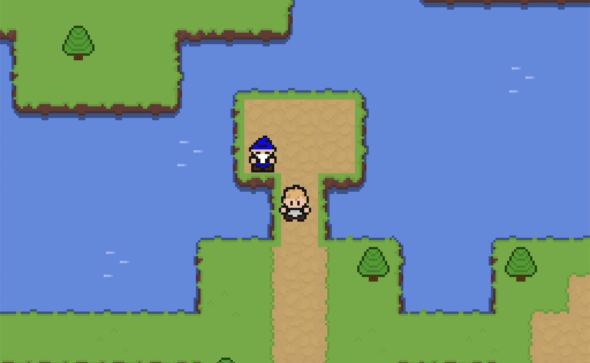

Aenean ornare velit lacus, ac varius enim lorem ullamcorper dolore aliquam.
Cheese Clicker is the first game I made in Java. It uses the Java Swing library to create a UI with buttons, a scrollbox, labels, and more to make an idle game inspired by Cookie Clicker. You click the rat in the middle of the screen to gain cheese that can be used to buy upgrades like cheesemakers, cottages (for cottage cheese), cheese factories, cheese caves, and more.
Guess what? Cheese Clicker even has custom music! Featuring 2 unique songs, the music in this game is extraordinary. Also, if you have the music playing, you get an extra 10% boost on all cheese per second (CPS)!
The graphics in the game are also beautiful (they're not). The game contains pixel art (made by me) of a rat for the main button and sprites for all the upgrades.
As my first game, Cheese Clicker was full of interesting design choices to say the least. The organization of the project was not very good. I used a runner to run the game rather than just have the main method in my main class. The action listeners are also not stored where they should be. They're all stored in a separate method rather than by the buttons themselves. Finally, the amount of cheese you have, or your score, is stored in a double, only allowing for you to gain a score as big as the max value for a double in Java.
In all, Cheese Clicker was a mess. There are so many that I would do differently but that's great because as my first game, it was a great learning experience and that's what it was meant to be!

Aenean ornare velit lacus, ac varius enim lorem ullamcorper dolore aliquam.

Aenean ornare velit lacus, ac varius enim lorem ullamcorper dolore aliquam.

Aenean ornare velit lacus, ac varius enim lorem ullamcorper dolore aliquam.
Contact me here!